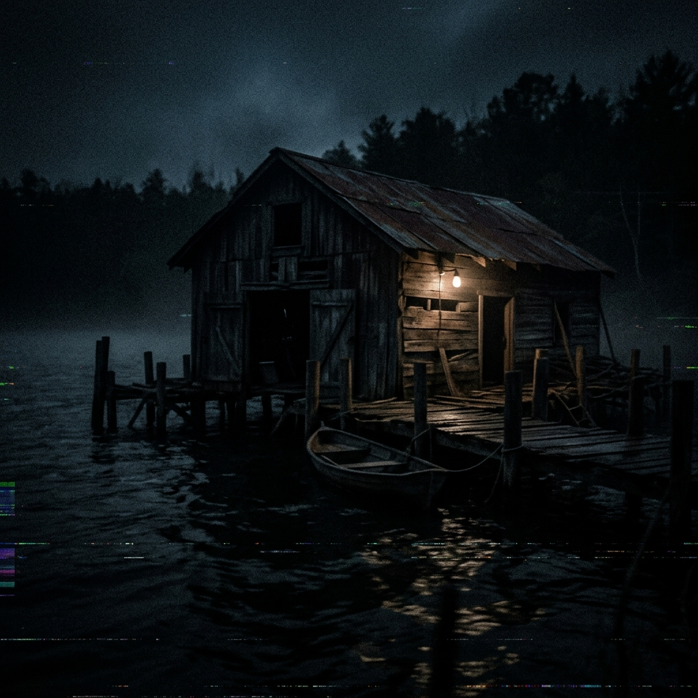

I think I'm making a mistake.
If you're reading this, then I was right.
Or dead.
Hopefully the first one.
I started keeping records today.
I locked everything in the Confidential archive.
The key is still there.
I just made sure nobody would notice it.
People forget.
People change details.
He's smiling in that photo.
Aryan was the first.
He keeps saying nothing happened.
But every time I look at him, I feel like I'm missing something.
I hope I am.
I found the report.
I wish I hadn't.
Everybody keeps calling it suicide.
But it doesn't feel like suicide.
It feels like something slower.
Something that took months.
Maybe nobody pushed him.
Maybe they just watched.
Aryan keeps saying he wasn't responsible.
Maybe he's right.
Maybe he never touched him.
But every witness keeps saying the same thing.
Nobody wanted to be next.
I don't think he believes that anymore.
